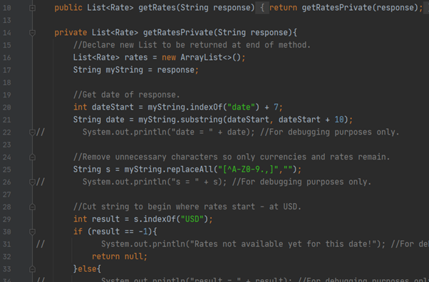
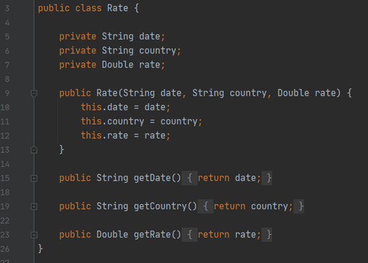
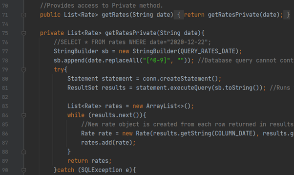
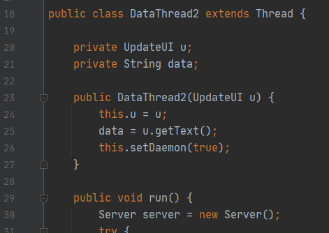
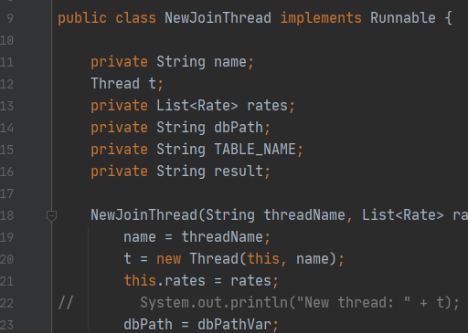
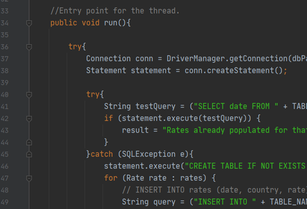
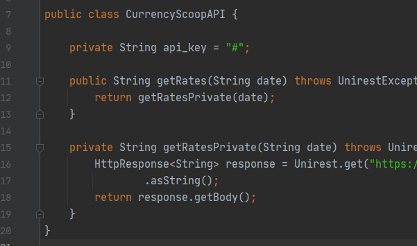
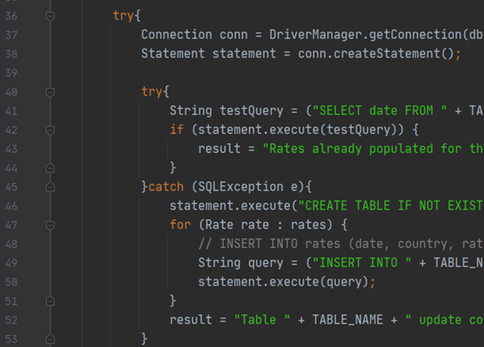

FX Rates Application Server
The Foreign Exchange (FX) Rates application server, is a multi-threaded application written in Java, allowing multiple users to access the rates at the same time, on their own thread.
It has multiple versions that allow it to run on both Windows and Linux PCs, and there is a bespoke User Interface (UI) coded using the Swing GUI widget toolkit for Java, which provides updates to users.
The application makes use of SQL and a Web API to query data from a website, store it and retrieve it as requested by users. This makes it much more efficient and would assist with scaling.

OOP
I made use of the Object-Oriented Programming paradigm through implementation of fundamental building blocks such as classes, objects, methods and attributes.
By creating FX Rate classes I had a template for storing all the attributes I needed for each, such as the rate itself, the date of it and the currency. Once I had the class I could create as many rate objects as necessary to store the data.
I created a number of methods to manipulate the data as required throughout the program, For example I had methods to create rate objects and update them to a table.
I made use of the Object-Oriented Programming paradigm through implementation of fundamental building blocks such as classes, objects, methods and attributes.
By creating FX Rate classes I had a template for storing all the attributes I needed for each, such as the rate itself, the date of it and the currency. Once I had the class I could create as many rate objects as necessary to store the data.
I created a number of methods to manipulate the data as required throughout the program, For example I had methods to create rate objects and update them to a table.
Encapsulation
By hiding the values or state of structured data objects inside classes, I was able to protect them and prevent unauthorized parties’ having direct access to them.
One example is the Rate class which stores the values of Rate objects once created. I used the “private” keyword to restrict access and then provided “getter” methods to allow retrieval of those values.
By hiding the values or state of structured data objects inside classes, I was able to protect them and prevent unauthorized parties’ having direct access to them.
One example is the Rate class which stores the values of Rate objects once created. I used the “private” keyword to restrict access and then provided “getter” methods to allow retrieval of those values.


Abstraction
In object-oriented design, programs are often extremely large and separate objects communicate with each other a lot. So maintaining a large codebase like this for years, with changes along the way, is difficult.
Applying abstraction meant that each object only exposed a high-level mechanism for using it. This mechanism hid internal implementation details and only revealed operations relevant for the other objects.
In object-oriented design, programs are often extremely large and separate objects communicate with each other a lot. So maintaining a large codebase like this for years, with changes along the way, is difficult.
Applying abstraction meant that each object only exposed a high-level mechanism for using it. This mechanism hid internal implementation details and only revealed operations relevant for the other objects.
Inheritance
In order to reuse common logic and extract the unique logic into a separate class, I used Inheritance. I achieved this through creation of “child” classes, deriving from another “parent” class.
The “child” class reuses all fields and methods of the parent class (common part) and implements its own unique part (attributes and methods).
In order to reuse common logic and extract the unique logic into a separate class, I used Inheritance. I achieved this through creation of “child” classes, deriving from another “parent” class.
The “child” class reuses all fields and methods of the parent class (common part) and implements its own unique part (attributes and methods).


Polymorphism
A common way of implementing Polymorphism is through use of interfaces. These give the ability to override a method from a superclass, in the subclass.
Implementing the Runnable Interface was partly how I was able to create multiple threads in the application. These took care of tasks that otherwise might have caused the Main Thread to freeze.
A common way of implementing Polymorphism is through use of interfaces. These give the ability to override a method from a superclass, in the subclass.
Implementing the Runnable Interface was partly how I was able to create multiple threads in the application. These took care of tasks that otherwise might have caused the Main Thread to freeze.
Multi-Threading
Since I created a bespoke User Interface (UI) to advise the user of what was happening with the application, I made use of multi-threading to avoid blockages in the Main Thread.
This was also necessary because the application would at times, have to perform searches in the web through an API, or make updates to tables. Without the use of multi-threading, those tasks would have had to run concurrently with the updates to the UI and would have caused it to freeze.
Additionally, by providing each user query from the client-side with its own thread, multiple users are able to query the application at the same time without it becoming blocked.
Since I created a bespoke User Interface (UI) to advise the user of what was happening with the application, I made use of multi-threading to avoid blockages in the Main Thread.
This was also necessary because the application would at times, have to perform searches in the web through an API, or make updates to tables. Without the use of multi-threading, those tasks would have had to run concurrently with the updates to the UI and would have caused it to freeze.
Additionally, by providing each user query from the client-side with its own thread, multiple users are able to query the application at the same time without it becoming blocked.


Web API
In order to retrieve the FX Rates to populate the tables in the application, I used a Web Application Programming Interface (API). I imported Unirest libraries and was subsequently able to make use of the “get” method to retrieve a full string of FX Rates from a website, for a given date.
Once the string is retrieved, it is sent to another class where it’s split into component attributes and used to create Rate objects, that are subsequently populated into a database for storage and retrieval.
In order to retrieve the FX Rates to populate the tables in the application, I used a Web Application Programming Interface (API). I imported Unirest libraries and was subsequently able to make use of the “get” method to retrieve a full string of FX Rates from a website, for a given date.
Once the string is retrieved, it is sent to another class where it’s split into component attributes and used to create Rate objects, that are subsequently populated into a database for storage and retrieval.
SQL
I used a SQL database to store the rates data. To access the rates, I created a number of methods which would query the database and look for existing tables of rates data for particular dates. If not found, the application would then use the Web API to retrieve rates for that date and create a new table in the database.
By using the database instead of relying on the Web API to retrieve all the rates, I was able to massively reduce the number of API calls to retrieve rates, since they would only have to be done once instead of multiple times. This also ensured the application would have rates available even if the website was down.
I used a SQL database to store the rates data. To access the rates, I created a number of methods which would query the database and look for existing tables of rates data for particular dates. If not found, the application would then use the Web API to retrieve rates for that date and create a new table in the database.
By using the database instead of relying on the Web API to retrieve all the rates, I was able to massively reduce the number of API calls to retrieve rates, since they would only have to be done once instead of multiple times. This also ensured the application would have rates available even if the website was down.
